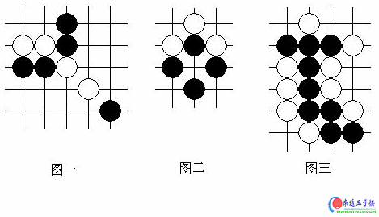

关于五子棋和围棋的区别，一点个人看法
#1 关于五子棋和围棋的区别，一点个人看法 作者：祭祀芙蓉 发表时间：2007-2-21 12:23:08
我的专项是五子棋，我对围棋的概念用比较正统的话来说就是：通过对棋子位置的合理选取达到占领更多地盘的目的。围棋可以说是一种非常精深的棋种，但是它的逻辑（或者说是目的）是非常简单的：占地。这样的逻辑和形式，包括围棋的变化吸引了很多的爱好者。我们不难发现，围棋和五子棋中都要连接、要材料、要空间、要先手，最终要取胜。所谓取胜，在围棋中指的是占更多的地方，在五子棋中（这里注意一下，我现在暂不讨论禁手的问题，禁手规则是在无禁五子棋的基础之上发展起来的，有的高手可能不屑我这样讨论，但我认为无禁五子棋对于初学者来讲是理解五子棋思路的重要阶段，我实际上不赞成一上来就拔苗助长地学习有禁五子棋）指的是连五。
我认为围棋和五子棋各自的特征就是在这里显现出来的：围棋中连接是为了占地，材料是为了占地，空间是占地的形式，有先手还是用来占地，最后的取胜就由你占地多少来判断；五子棋中，连接很重要、材料很重要、先手更重要，但是要取胜则是使用一个很形式化的东西“连五”，这在没有五子棋水平的人看起来与前面的连接啊、材料啊、先手啊似乎没有太大关系！五子棋这种间接式的、多元化的思维逻辑是与围棋完全不同的。那么相比之下，围棋的“占地”逻辑更加清楚而精深，五子棋的逻辑则更加复杂和多变。下面我就从连接、材料、空间、先手和取胜五个方面分别说说五子棋和围棋的区别。
（一）连接
围棋在连接上面的逻辑很清晰：只能走横竖线，实实在在地连上就可以了。五子棋的连接好像更容易一点。图一，围棋中黑棋把白棋断开为两部分，但是五子棋中白棋两部分可以共同形成一个斜眠三，两部分是有联系的；图二，围棋中这是一个成型的“劫”，关于“劫”这个东西我水平太浅不好评论，但是我大概了解劫一般很难被“破掉”，通常情况下双方争“劫”的结果就是一方把“劫”填死，“劫”是一个可以“遥控”场面任何一点战局的围棋特有的产物，这其实打破了“连接”的概念，而在五子棋中这个形状其实也是黑白双方拥有极多连接的激烈形状；图三，有的时候围棋的连接要求又要比五子棋低，图中黑棋很老实地将上下两块棋连接了起来，但在五子棋中，局部来看黑棋上下是没有什么连接的。

（二）材料
材料就是棋子，特指成一定形状的或具有一定作用的棋子。我们熟悉的棋种中，中国象棋和国际象棋的棋子本身就有明确的作用，而且是可以移动的，因此材料不足可以互补；五子棋和围棋的所有棋子都是一模一样不能移动的，具有相似之处，材料不足只能通过一手棋来补充。然而五子棋有一个最重要的特征：不可以吃子！因此每一手棋，每一个材料都要发挥最大的效率，如果是废棋甚至影响了自身，那么一整盘棋都要背着这个包袱，而走出一步妙手的好处也是巨大的。从围棋的角度来讲，不过怎么说，有了吃子的威胁，虽然进攻的手段多了，但是每一步棋可能发挥的作用就有了一个限制——因为不管怎么说，这个子若是一步妙手，多半深入敌阵，总是有被吃掉而消除的危险的。
（三）空间
围棋中空间就是取胜的形式，并且往往——空间使局面明朗化，因为如果这块空间被你控制，很好地控制，那么对手在空间中出棋的可能性是不大的，这个空间也往往成为双方对局者都不会再考虑的部分。然而由于五子棋的特点（交换比较快，一手棋的作用比较大等等），你不可能有很多手棋都为一个空间做贡献，那样你必输无疑，因此在一定区域内你有两手闲棋就已经很不错了——这当然是不够牢固的，因此对手很有可能对这个空间进行进攻和破坏，因此五子棋中空间的作用往往是使局面复杂化、混乱化，相对较大空间中（无论是19道盘还是15道盘），谁也不敢保证优势一定能转换为胜势。
（四）先手
有的人说五子棋先手重要，是重要，一招判胜负，但不代表围棋的先手不重要，一手先手棋也好多目呢！对于高水平的围棋对局来说，一步先手也是致命的！这点认识必须要澄清。那么先手的作用在五子棋和围棋中又有什么区别呢？有的！围棋的先手是有可能争回来的，这步先手我损10目，下步先手我得15目，别看高水平围棋对局的结果经常是3目、5目的胜利，但这其中的目数得失过程之激烈也丝毫不逊于五子棋。我们不妨设想一下，对应五子棋的话，把围棋的取胜规则改为：走出一步价值20目的先手（只是打个比方，这个规则显然毫无道理），那么围棋又会变成什么样子呢？但是五子棋就不一样了，一步先手是致命的，不仅是在程度上，也是在事实上。正如许多人认同的那样，即使是高手也会因为一步棋，一步失先，一步大恶手输给稍有实力的低手，这是五子棋残酷性的表现，也是它富有吸引力的一个方面。纵然是绝顶高手也会因为一步棋导致失败，并且没有挽回的机会。
（五）取胜
围棋的取胜是一个量变的过程，并且如果不看胜负结果的话不存
#2 Re:关于五子棋和围棋的区别，一点个人看法 作者：屏蔽 发表时间：2007-2-21 17:54:21
引用：
【写在前面】忽然想到这个问题了，觉得还有挺多想法的，就写一下。我不太会下围棋，但是也希望能比较客观地比较一下这两个棋种，如有高手还请多多斧正。
转也不转全了么……
#3 Re:关于五子棋和围棋的区别，一点个人看法 作者：屏蔽 发表时间：2007-2-21 17:57:56
从分割线的长度来看，这篇文章最有可能是从五子棋吧上的那篇转过来的：
http://post.baidu.com/f?kz=174248331
最先发布的是在我的百度空间里：
http://hi.baidu.com/%C6%C1%B1%CE/blog/item/bb9e7f59d9d0002a2934f0d7.html
支持一下自己的文文哈～
#4 Re:关于五子棋和围棋的区别，一点个人看法 作者：孤竹 发表时间：2007-2-22 11:29:20
哈哈，看来百度五子棋贴吧越来越受关注咯~，也感谢屏蔽等专业棋手对五子棋贴吧的支持~